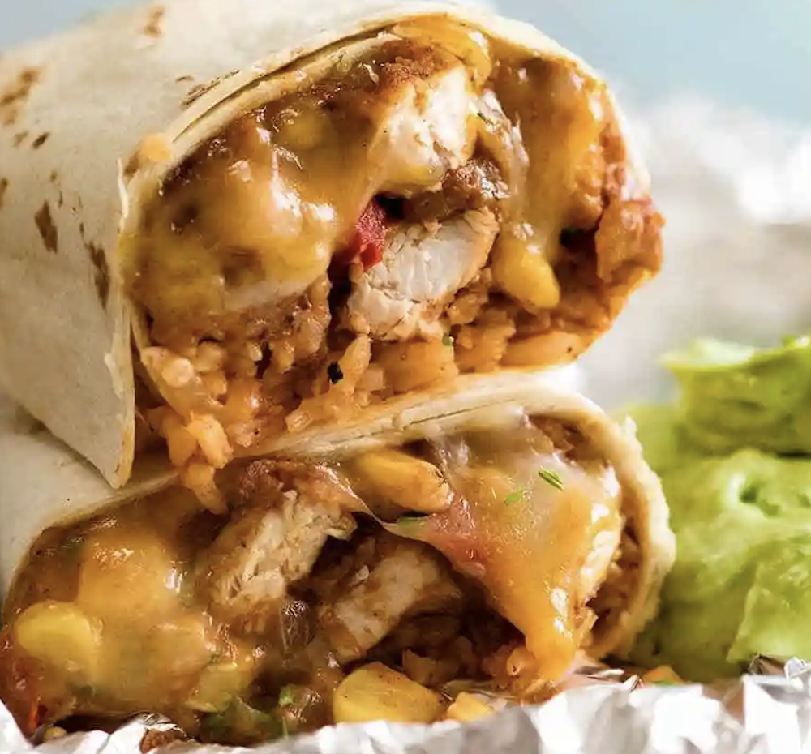

Chicken Burrito

Prep Time:
Cook Time:
Servings:
Cuisine:
Ingredients
For the Chicken
- 300 grams Chicken , cut into stripes
- 1 Onion , sliced
- 4 cloves Garlic , chopped
- 1 inch Ginger , chopped
- 1 tablespoon Cumin powder (Jeera)
- 1 teaspoon Black pepper powder
- 1/2 teaspoon Cinnamon Powder (Dalchini)
- 2 teaspoon Paprika powder
- 1/2 teaspoon Turmeric powder (Haldi)
- Salt , to taste
For the Beans
- 1/2 cup Rajma (Large Kidney Beans) , soaked and boiled
- 1 Onion , 1 Tomato , 4 cloves Garlic , chopped
- 1 tablespoon Cumin powder (Jeera),Red Chilli powder,Black pepper powder,Sugar
- Salt , to taste
For the Rice
- 1/4 cup Cooked rice
- 1 tablespoon Dried Thyme Leaves, Paprika powder
- Salt , to taste
For Fajitha
- 1/2 Green Bell Pepper (Capsicum) ,Red Bell pepper (Capsicum)
Yellow Bell Pepper (Capsicum)
- 1/2 Onion
- 1 tablespoon Cumin powder (Jeera), Paprika powder
- Salt , to taste
Other Ingredients
- 1 cup Tomato Salsa
- 1 cup Sour cream
- 1/4 cup Cheese
- 2 Tortillas
Recipe
- To begin making the Chicken Burrito Recipe, we will first pressure cook the rajma beans in a pressure cooker in about 2 cups of water and salt for at least 30 minutes.
To make the Fried Beans
- Once done, allow the pressure to release naturally and keep it aside. Heat a skillet with oil, add garlic and saute till it softens.
- Add in onions and saute till they turn translucent and crispy, add in cooked rajma beans and tomatoes together so that the tomatoes remain fresh and juicy as it gets blended with the rajma
- Sprinkle salt to taste and spice powders like cumin powder, red chilli powder and pepper powder and give it a mix. Check for seasoning, if required, dd some more and keep sautéing until the mixture comes together. Once done, allow it to cool for some time
To make the Sauteed Chicken
- Wash the chicken breast thoroughly and cut them into thin stripes and set aside
- Heat a sauce pan with a tablespoon oil, add ginger and garlic and saute till they turn soft. Later add in the onions and saute till they turn translucent
- Once the onions are lightly sauteed, add cooked jackfruit and give it a mix. Sprinkle the spice powders like paprika, pepper, turmeric, cumin, cinnamon and salt to taste. Give it a toss and check for seasonings again and set aside to cool.
For the rice
- Heat a sautéing pan with oil, add rice and sprinkle with thyme, paprika powder and salt and give it a toss
For the Fajitas
- Heat a grill pan with oil, add onions, bell peppers allow it to cook for few minutes.
- Sprinkle with spice powders like cumin powder, paprika powder and salt. Toss it well and cook till the bell peppers are soft and crunchy. Once done set aside.
To Assemble
- Warm up the tortillas for 2 minutes on either side. Place the Tortillia on a foil to roll. Layer it with rice first.
Then add in some Mexican tomato salsa, followed by Sauteed Chicken, fried beans, fajitas, sour cream and roll it tightly and cover it with a foil. Cut them half and serve.